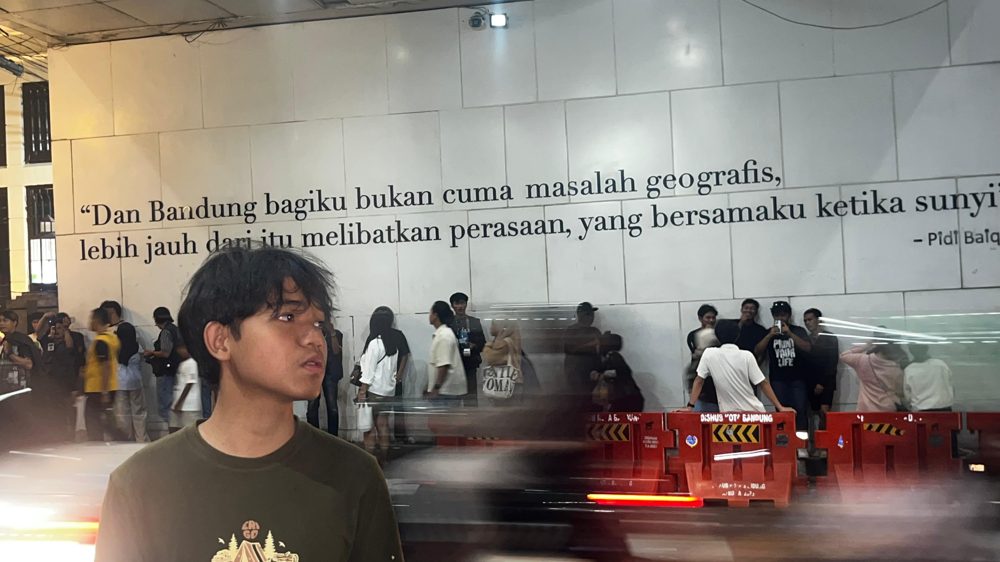

Liburan Selama 3 Bulan
Nama: Joshua Naibaho
NIM: 2582013
Liburan kali ini berlangsung cukup lama, sekitar 3 bulan, dan sebagian besar waktu aku habiskan di rumah bersama keluarga. Meski begitu, aku tetap menyempatkan diri untuk jalan-jalan ke beberapa tempat yang berkesan. Salah satunya adalah Bandung, tempat aku berkeliling kota sambil menginap di VIB (Vila Istana Bandung) selama beberapa hari, menikmati udara sejuk dan suasana kota yang khas. Selain itu, aku juga menjelajahi Jakarta dan mengunjungi tempat-tempat ikonik seperti Monas, Kota Tua, dan Bundaran HI, sambil sesekali berhenti untuk mencicipi kuliner khas di sekitar sana. Tidak berhenti di situ, aku juga menikmati suasana pantai yang menenangkan dan hangat di Anyer bersama teman-teman dan keluarga, bermain air dan menikmati matahari terbenam yang indah, serta merasakan sejuknya udara pegunungan dengan camping di kawasan Puncak bersama keluarga besar, sebuah pengalaman yang benar-benar tak terlupakan. Semua perjalanan ini membuatku semakin bersyukur bisa menghabiskan waktu berkualitas bersama orang-orang terdekat.

Di sisa waktu liburan, sebagian besar kegiatanku dihabiskan di rumah untuk bermain game seperti mobile legend sekaligus mempelajari hal-hal baru yang bermanfaat bagi masa depanku. Aku mulai belajar Excel dan MySQL, bahkan mencoba membangun proyek kecil kecilan sebagai rencana menjadi data analyst dengan merancang dashboard sederhana menggunakan Power BI. Selain itu, aku juga mempelajari teknik data cleaning untuk merapikan data yang masih berantakan, serta mulai mengenal dasar-dasar JavaScript sebagai bekal untuk belajar pemrograman web lebih lanjut. Tidak jarang aku menghabiskan waktu berjam-jam hanya untuk mencoba error yang muncul saat latihan, tapi justru dari situ aku belajar untuk lebih sabar dan teliti. Sebagai penghibur di waktu istirahat, aku biasanya bermain Minecraft untuk membangun dunia sendiri dan Mobile Legends bersama teman-teman untuk melepas penat dan bosan setelah belajar seharian penuh. Semua kegiatan ini membuatku merasa liburan kali ini jauh lebih produktif dibanding sebelumnya.
Visit my faculty web
fti.unai.edu
and my social media instagram
@Joshfrntyz.
chayo ws